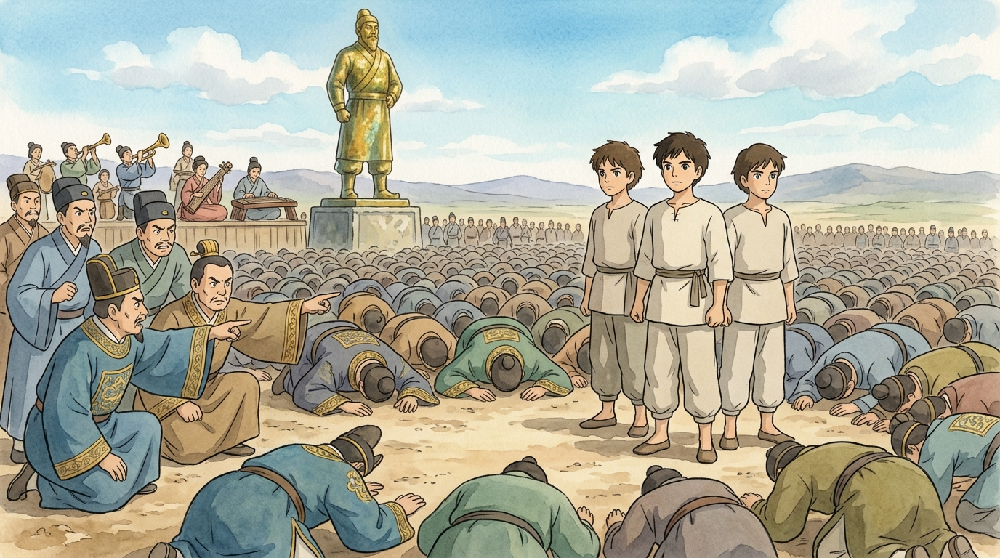
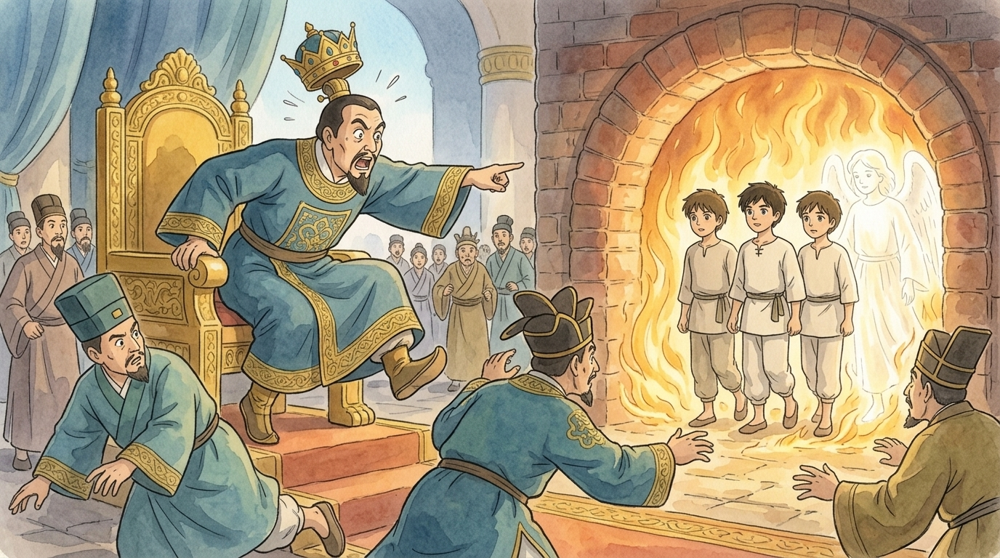
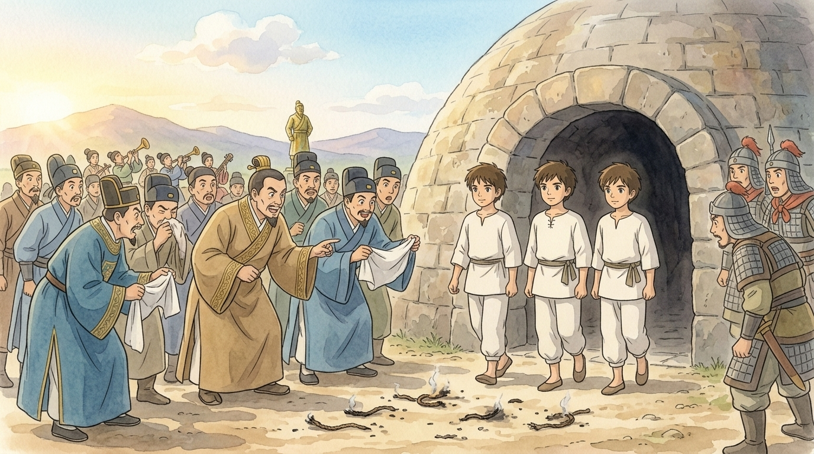

Fifty years after the great days of Babylon, a young scribe went looking for people who had seen its wonders with their own eyes. In a small house by the river he found an old, old man — once a soldier of King Nebuchadnezzar's royal guard — who agreed to tell what he saw one day on the plain of Dura. The scribe wrote it down word for word. This is that interview.1
🎙️ "Tell me about the statue."
Ohh, the statue. (The old man spreads his arms wide.) Young man, imagine gold — now imagine a tower of it, ninety feet tall, blazing in the desert sun so bright it hurt to look at. King Nebuchadnezzar built it on the plain of Dura and summoned every official in the empire — governors, judges, treasurers, all of us in our best uniforms, thousands upon thousands. And the herald read the decree: when the music plays, every man bows to the golden statue. And whoever does not bow goes into the blazing furnace. There was a furnace, too, you understand — the great kiln, close by, roaring away so we could all hear it.
Then the orchestra struck up — horns, flutes, zithers, the lot — and the whole plain of Dura went down like a field of wheat in the wind. Thousands of foreheads in the dust. Except…
Here the old man stopped and smiled. "Except three men. Three men of Judah, standing up straight in a bowed-down world — like three trees left standing in a flattened field. Shadrach, Meshach and Abednego. Young administrators, and good ones. I knew them. Everyone knew them. And everyone near them went very, very quiet."

🎙️ "What did the king do?"
What do you think? Certain officials — jealous of the three for years, if you ask me — went scurrying to the king to report them.2 And Nebuchadnezzar turned the color of his own furnace. But — and this surprised us — he offered them a second chance. "Perhaps you didn't hear the music," says he. "We'll play it again. Bow, and all is forgotten. Refuse — and what god will rescue you from MY hand?"
(The old man leans forward.) Young scribe, I have heard ten thousand speeches in my life. Kings, generals, poets. I remember one. The three looked at each other, then at the king, and one of them spoke for all three — calm as morning, in front of the furnace they could hear roaring:
Did you catch it? Even if He does not. That is the bravest sentence I ever heard.3 They did not say "God will surely save us, so we're not scared." They said: God CAN save us — but our answer is no whether He does or not. Their obedience wasn't for sale, not even for a miracle. My knees were braver than theirs that day, and mine were the ones knocking.
🎙️ "And then the furnace."
The king's face went past red into something with no name, and he ordered the furnace heated seven times hotter — so hot that we of the guard could not even go near the opening; the heat rushed out like a living thing, and the strongest of us fell back from it.4 The three were bound with ropes, still in their robes and turbans, and… in they went. I will not pretend it was easy to watch. The plain held its breath.
And then, young man, came the moment I have told at every dinner for fifty years, and my family groans, and I tell it anyway, because it is TRUE. King Nebuchadnezzar was staring into the furnace mouth — and suddenly he leapt off his seat like a man stung by a scorpion.
"Didn't we throw THREE men, tied up, into the fire?" — "Certainly, O king, three." — "Then LOOK! I see four men, unbound, walking around in the fire, not a hair of them harmed — and the fourth looks like a son of the gods!"

I looked. We all looked. Four figures, strolling through the flames as you would stroll through a garden — three we knew, and a fourth, shining, that no one had walked in and no one saw walk out. Who was he? (The old man is quiet for a moment.) The men of Judah say God sent His angel; some say it was the LORD Himself come down to stand with His children in the fire. I am an old soldier, not a scholar. I only tell you what these eyes saw: they were not alone in there.5
🎙️ "How did it end?"
The king shouted them out by name — "Servants of the Most High God, come out!" — and out they walked, calm as ever. And we all crowded round, governors and guards together, and saw it with our own eyes: not a hair singed, not a robe scorched. They did not even smell of smoke. The only things burned were the ropes that had bound them. Think on that, young man: the fire took nothing except the things that tied them.

And Nebuchadnezzar — the man who built the statue! — stood before all Babylon and declared: "Praise be to the God of Shadrach, Meshach and Abednego, who sent His angel and rescued His servants! They trusted in Him, defied the king's command, and were willing to give up their lives rather than serve any god except their own God." Then he promoted all three. Babylon never forgot it. Neither, as you can plainly see, have I.
The scribe closed his notes and asked one last question: "After fifty years — what should I tell children about that day?" The old guard thought a long while. "Tell them this. One day the music will play for them too — some crowd will bow to something they know is wrong, and every knee around them will bend, and standing up straight will feel like standing alone. Tell them about the fourth man. Because the ones who stand for God never stand alone in the fire. Even if — you remember, boy — even if." 🎙️